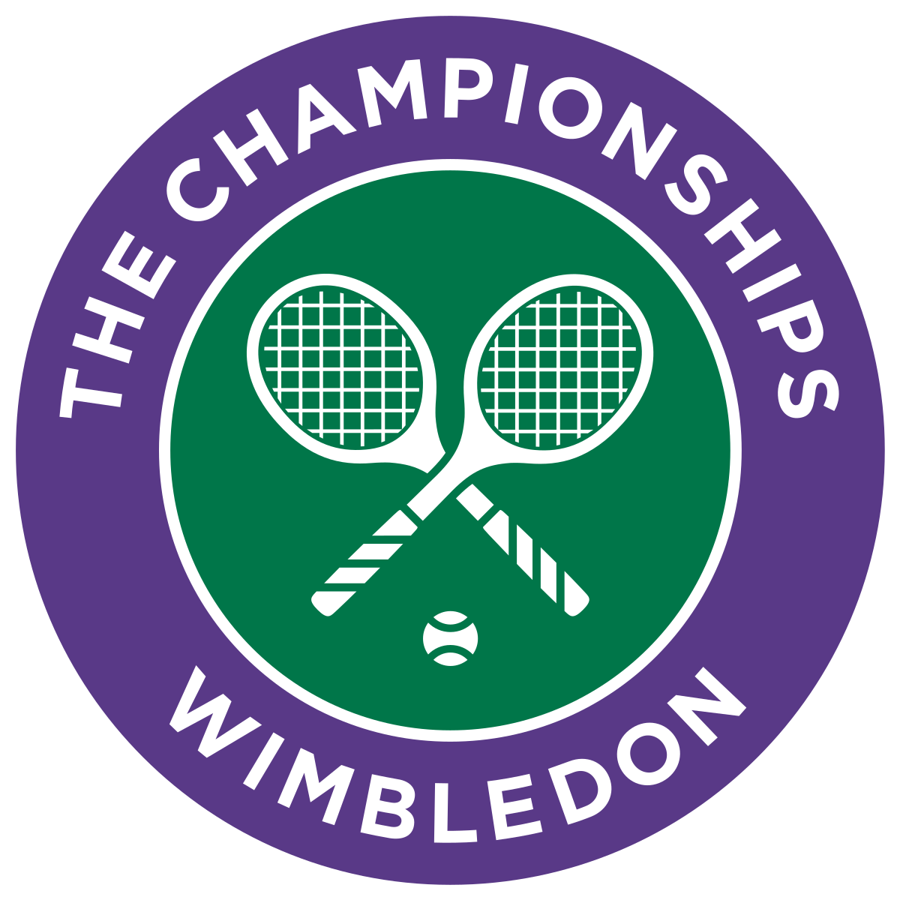

The Wimbledon Championships are played in the first two weeks of July (as of July 2017, prior to this it was last week in June and 1st week in July) and has been chronologically the third of the four Grand Slam tournaments of the tennis season since 1987.[4] The event was not held from 1915 to 1918 because of World War I and again from 1940 to 1945 because of World War II.[5] It was also cancelled in 2020 due to the COVID-19 pandemic.[6] Wimbledon Lawn tennis final, 15 July 1879. The Gentlemen's Singles' rules have undergone several changes since the first edition. From 1878 until 1921, the event started with a knockout phase, the All Comers' Singles, whose winner then faced the defending champion in a challenge round. The All Comers' winner was automatically awarded the title six times (1879, 1887, 1891, 1895, 1907, 1908) in the absence of the previous year's champion. The challenge round system was abolished with the 1922 edition.[7] Since the first championships, all matches have been played at the best-of-five sets. Between 1877 and 1883, the winner of the next game at five games all took the set in every match except the All Comers' final, and the challenge round, which were won with six games and a two games advantage. All sets were decided in this advantage format from 1884 to 1970.[7] The best-of-12-points lingering death tie-break was introduced in 1971 for the first four sets, played at eight games all until 1978 and at six games all since 1979.[7][8][9] Since 1949, the Gentlemen's Singles champion has received a miniature replica of the event's trophy, a silver-gilt cup created in 1887 with the engraved inscription: "The All England Lawn Tennis Club Single Handed Champion of the World".[10] New singles champions are traditionally elected honorary members of the AELTC by the club's committee.[c][13] In 2017, the Gentlemen's Singles winner received prize money of £2,220,000.[14] In the Amateur Era, William Renshaw (1881–1886, 1889) holds the record for the most titles in the Gentlemen's Singles, winning Wimbledon seven times. Renshaw's wins, however, came within the challenge round format, and he won the event only twice after going through a complete draw. Renshaw also holds the record for most consecutive titles with six (from 1881 to 1886). The record for most consecutive and most wins post challenge round during the Amateur Era is Fred Perry with three (1934–1936).[5] In the Open Era, since the inclusion of professional tennis players in 1968, Roger Federer (2003–2007, 2009, 2012, 2017) holds the record for the most Gentlemen's Singles titles with eight. Björn Borg (1976–1980) and Roger Federer (2003–2007) share the record for most consecutive victories with five.[5] Federer reached 7 consecutive Wimbledon Finals (2003 – 09) surpassing the old record of 6 consecutive finals by Borg (1976–81) and in the process the Swede won 41 consecutive matches at Wimbledon. This event was won without losing a single set in the entire tournament during the Open Era twice, in 1976 by Björn Borg and in 2017 by Roger Federer. Roger Federer is the only player in history, in both the Amateur and Open Era, to reach the Wimbledon Gentlemen's Singles Final twelve times. For 9 consecutive years from 1992 to 2000, an American player reached Wimbledon final winning 8 titles out of 9, only exception being 1996 Runner Up MaliVai Washington, a new open era record. 
the most title winner of the grass court
the 7 times winner ROGER FEDERER